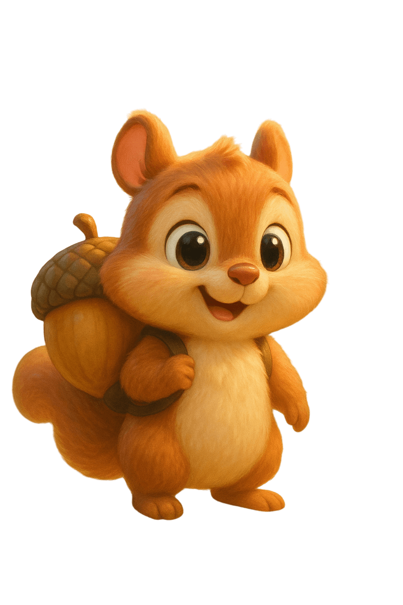
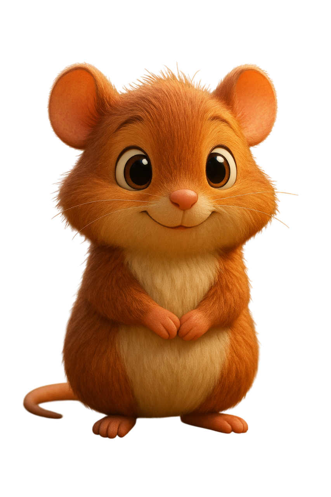
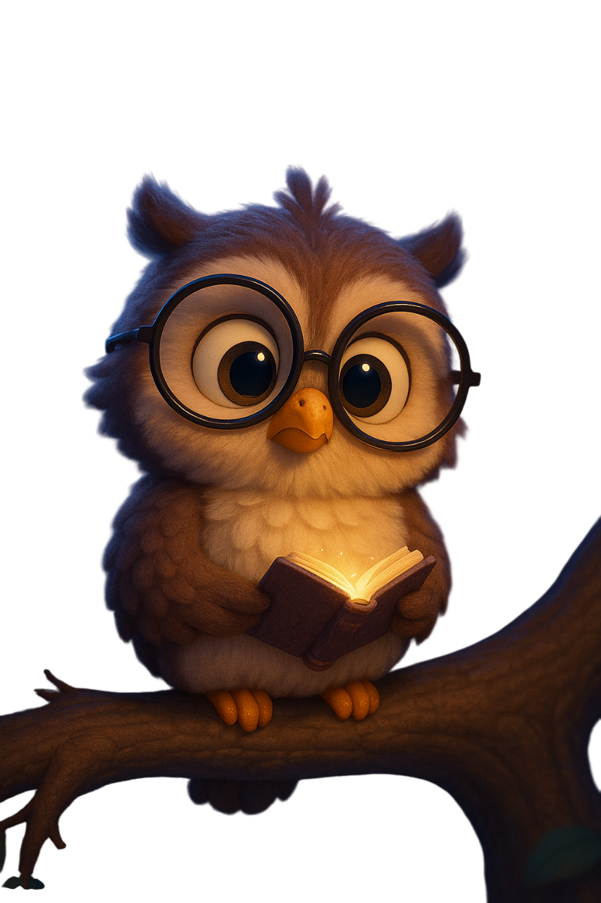
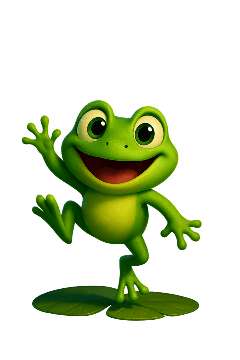
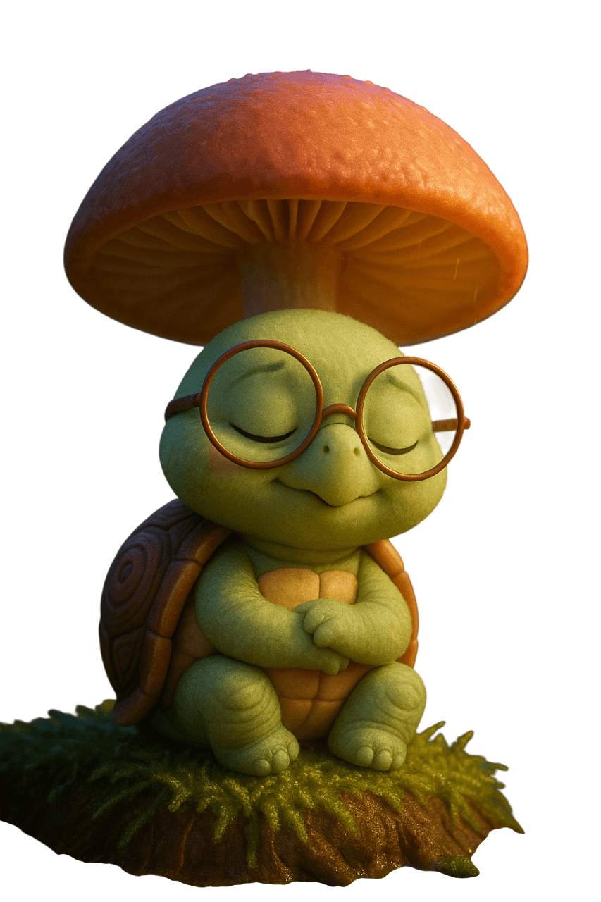
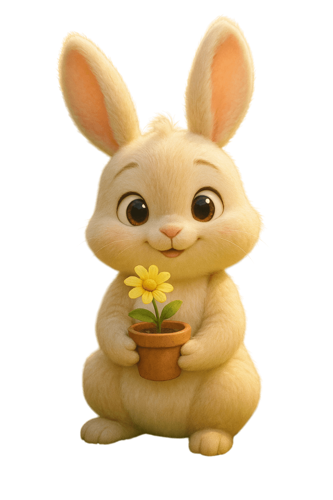
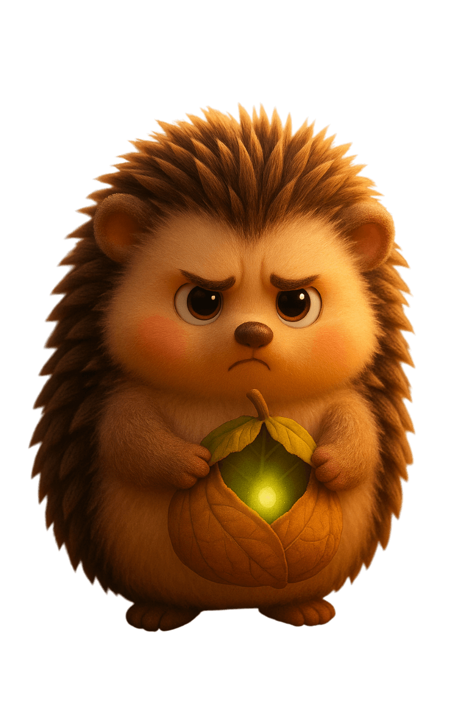
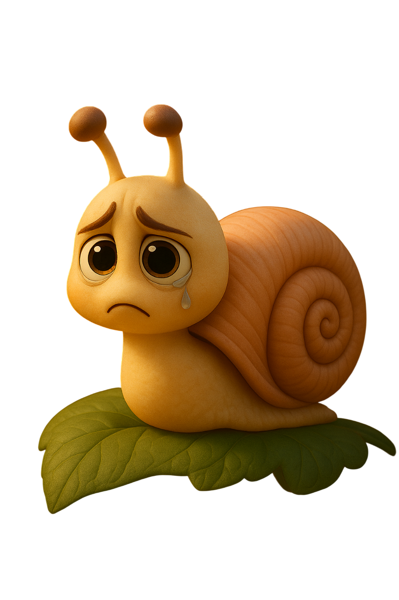
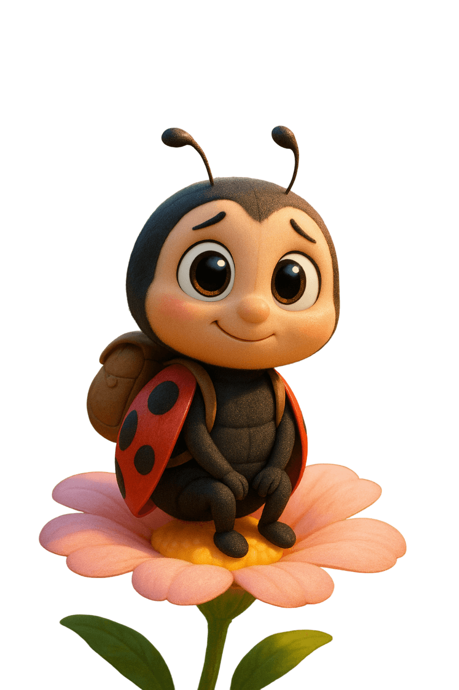
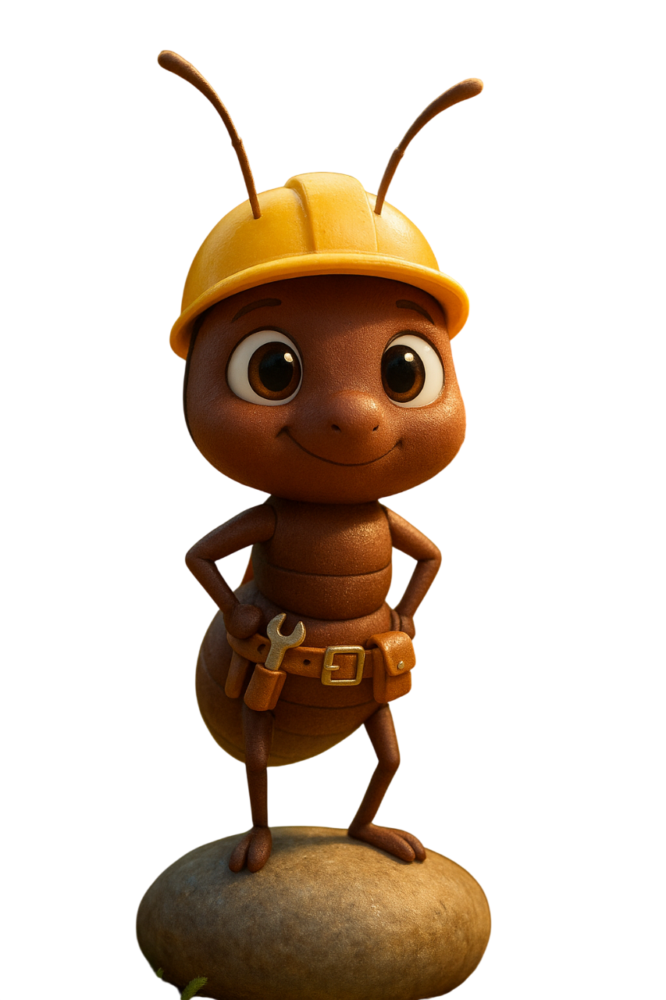

🌱 先看一則叩叩故事
選一則短故事，再用下面的小提示陪孩子一起看。




選一則短故事，再用下面的小提示陪孩子一起看。
用三個簡單步驟看一則故事。
挑一句英文，和孩子一起說一兩次。
問：發生了什麼？叩叩感覺如何？如果是你會怎麼做？
畫一個東西、演一小段，或睡前再說一次。
可愛的角色陣容，每個都有自己的個性與故事角色。






每週收到一則叩叩故事、一句英文、兩個問題，和一張可列印活動。
你會先收到一份短版樣張，下一份叩叩故事包準備好後再寄出。
 掃描或分享
fursay.com/share/koko
掃描或分享
fursay.com/share/koko
搭配每集故事主題，精選適合 2–8 歲孩子的暢銷繪本。看完影片，再翻翻書，學習效果加倍！
透過以上連結購書，博客來會提供少許回饋金支持我們持續製作免費故事。
書單由叩叩團隊挑選，與影片教學主題搭配，絕非廣告置入。